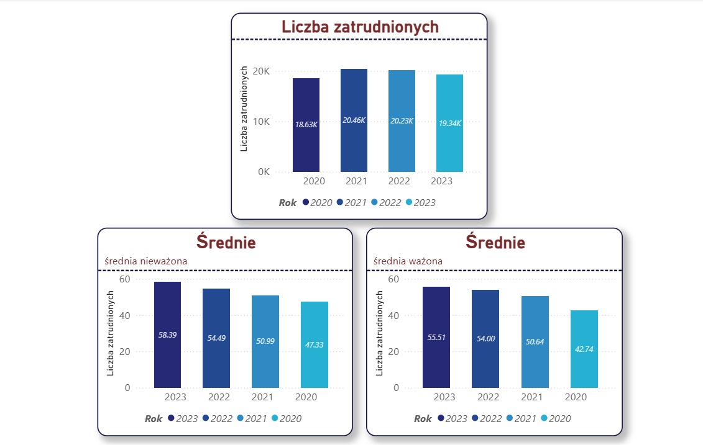
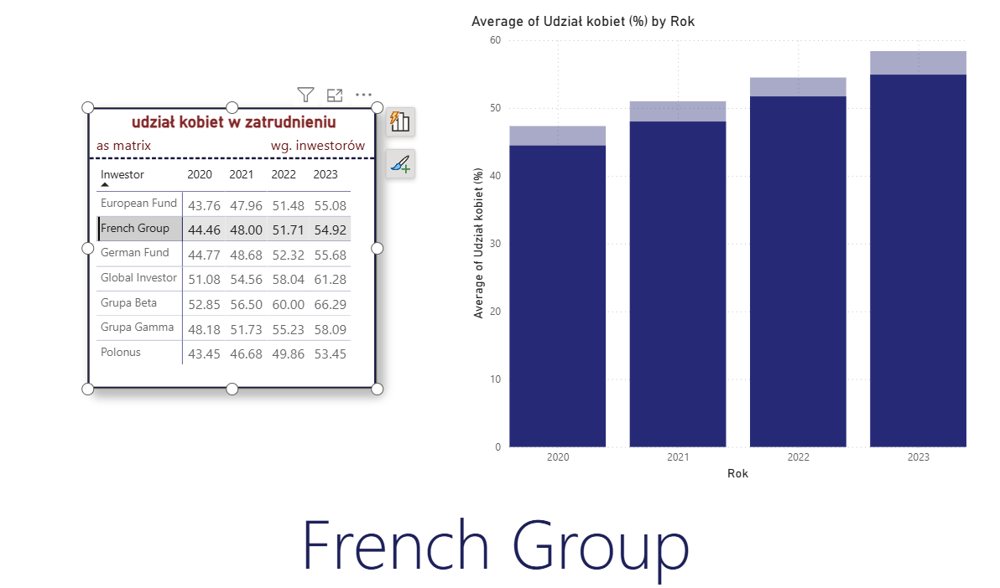
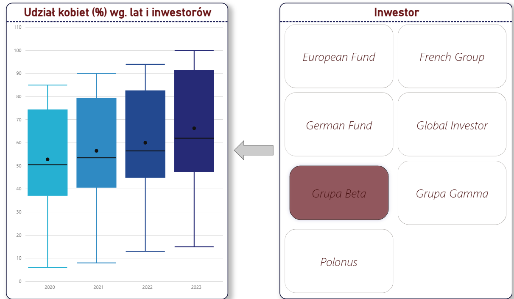
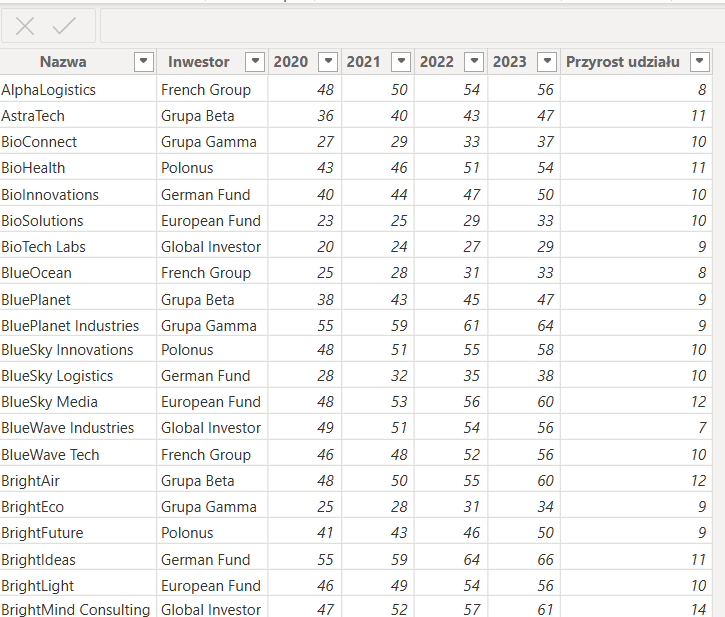
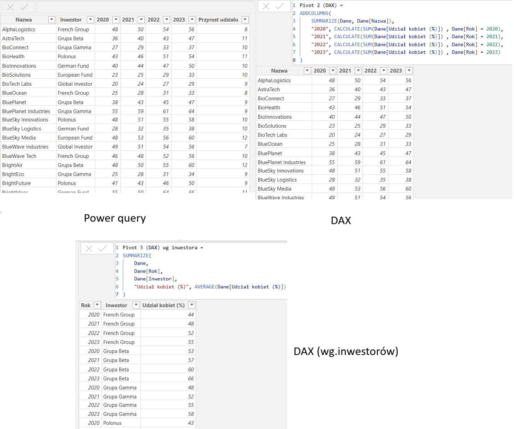
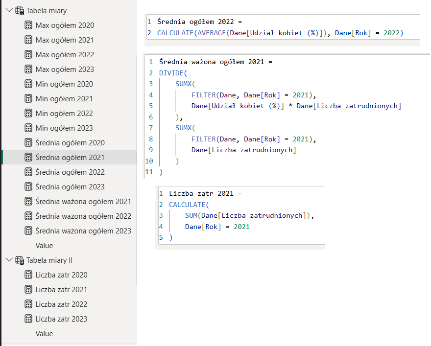
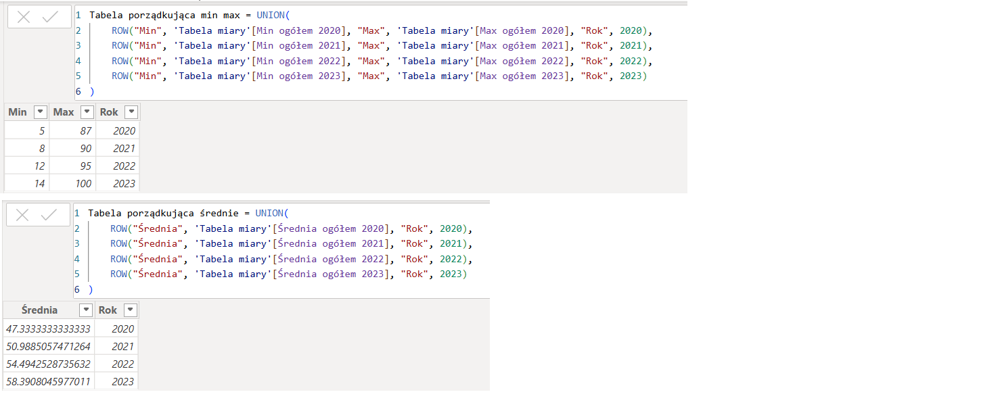

Praca z danymi dotyczącymi zatrudnienia oraz udziału kobiet w zatrudnieniu w przedsiębiorstwach w latach 2020–2023. Dane zostały przygotowane i przekształcone w Power Query, a następnie wykorzystane do analizy średnich, wartości minimalnych i maksymalnych oraz średniej ważonej udziału kobiet, z uwzględnieniem liczby zatrudnionych jako wagi. Miary i obliczenia w DAX zostały przygotowane z wykorzystaniem AI jako wsparcia w procesie analizy i tworzenia formuł. Przygotowano również interaktywny dashboard w Power BI umożliwiający analizę danych według przedsiębiorstwa, branży, inwestora i roku.






